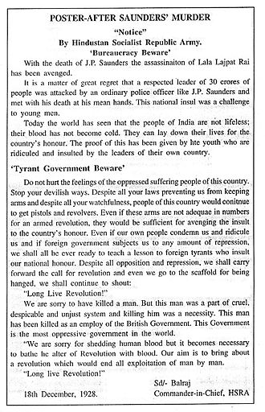

Acknowledgement

I want to express my special gratitude to my teacher who gave me the golden opportunity to do this project on the topic (Hidden Gems Of Modern India!). It helped me do a lot of research and I came to know about many things related to this topic.
Finally, I would also like to thank my parents and friends who helped me a lot in finalizing this project within the limited time frame.
Introduction

Bhagat Singh was a hero of the early 20th-century Indian independence movement. He was a revolutionary freedom fighter who was hanged to death by the British at the age of 23 years. His early execution made him a national hero of the Indian freedom struggle against colonial rule. Fondly called "Shaheed Bhagat Singh", many consider him one of the earliest Marxists in India. On the occasion of Shaheed-e-Azam's 114th birthday, we remember him.
Cultural Life
Communism
Singh regarded Kartar Singh Sarabha, the founding member of the Ghadar Party, as his hero. He was also inspired by Bhai Parmanand, another founding member of the Ghadar Party.
Singh was attracted to anarchism and communism.
He was an avid reader of the teachings of Mikhail Bakunin and also read Karl Marx, Vladimir Lenin, and Leon Trotsky.
In his last testament, "To Young Political Workers", he declares his ideal as "Social Reconstruction on a new, Marxist, basis". Singh did not believe in the Gandhian ideology, which advocated Satyagraha and other forms of non-violent resistance, and felt that such politics would replace one set of exploiters with another.
From May to September 1928, Singh published a series of articles on anarchism in Kirti. He was concerned that the public misunderstood the concept of anarchism, writing that "The people are scared of the word anarchism." The word anarchism has been abused so much that even in India revolutionaries have been called anarchists to make them unpopular. He clarified that anarchism refers to the absence of a ruler and the abolition of the state, not the absence of order. He went on to say, "I think in India the idea of universal brotherhood, the Sanskrit sentence Vasudhaiva Kutumbakam etc., has the same meaning." He believed that:
The ultimate goal of anarchism is complete independence, according to which no one will be obsessed with God or religion, nor will anybody be crazy for money or other worldly desires. There will be no chains on the body or control by the state. This means that they want to eliminate the Church, God, and religion; the state; and private property.
On January 21, 1930, during the trial of the Lahore Conspiracy Case, Bhagat Singh and his HSRA comrades appeared in the court wearing red scarves. When the magistrate took his chair, they raised the slogans "Long Live Socialist Revolution", "Long Live Communist International", "Long Live People", "Lenin's Name Will Never Die," and "Down with Imperialism". Bhagat Singh then read the text of a telegram in the court and asked the magistrate to send it to the Third International. The telegram stated:
"On Lenin's Day we send hearty greetings to all who are doing something to carry forward the ideas of the great Lenin. We wish success for the great experiment Russia is carrying out. We join our voice to that of the international working class movement. The proletariat will win. Capitalism will be defeated. "Death to Imperialism".
Historian K. N. Panikkar described Singh as one of the early Marxists in India. The political theorist Jason Adams notes that he was more enamoured with Lenin than with Marx. From 1926 onward, he studied the history of the revolutionary movements in India and abroad. In his prison notebooks, he quoted Lenin in reference to imperialism and capitalism, and also the revolutionary thoughts of Trotsky.
On the day of his execution, Bhagat Singh was reading the book, Reminiscences of Lenin, authored by Clara Zetkin, a German Marxist. When asked what his last wish was, Singh replied that he was studying the life of Lenin and he wanted to finish it before his death.
Atheism
Singh began to question religious ideologies after witnessing the Hindu–Muslim riots that broke out after Gandhi disbanded the Non-Cooperation Movement. He did not understand how members of these two groups, initially united in fighting against the British, could be at each other's throats because of their religious differences. At this point, Singh dropped his religious beliefs, since he believed religion hindered the revolutionaries' struggle for independence, and began studying the works of Bakunin, Lenin, and Trotsky—all atheist revolutionaries. He also took an interest in Soham Swami's book, Common Sense.
While in prison in 1930–31, Bhagat Singh was approached by Randhir Singh, a fellow inmate, and a Sikh leader who would later found the Akhand Kirtani Jatha. According to Bhagat Singh's close associate Shiva Verma, who later compiled and edited his writings, Randhir Singh tried to convince Bhagat Singh of the existence of God, and upon failing berated him: "You are giddy with fame and have developed an ego that is standing like a black curtain between you and God". In response, Bhagat Singh wrote an essay entitled "Why I Am an Atheist" to address the question of whether his atheism was born out of vanity. In the essay, he defended his own beliefs and said that he used to be a firm believer in the Almighty, but could not bring himself to believe the myths and beliefs that others held close to their hearts. He acknowledged the fact that religion made death easier, but also said that unproven philosophy is a sign of human weakness. In this context, he noted:
As regard the origin of God, my thought is that man created God in his imagination when he realised his weaknesses, limitations, and shortcomings. In this way, he gained the courage to face all the difficult circumstances and dangers that might arise in his life, as well as to restrain his outbursts of prosperity and affluence. God, with his whimsical laws and parental generosity, was painted in a rainbow of imaginative colors. He was used as a deterrent factor when his fury and his laws were repeatedly propagated so that man might not become a danger to society. He was the cry of the distressed soul, for he was believed to stand as father and mother, sister and brother, brother and friend, when in a time of distress a man was left alone and helpless. He was almighty and could do anything. The idea of God is helpful to a man in distress.
Towards the end of the essay, Bhagat Singh wrote:
Let us see how steadfast I am. One of my friends asked me to pray. When informed of my atheism, he said, "When your last days come, you will begin to believe." I said, "No, dear sir, never shall it happen." I consider it to be an act of degradation and demoralisation. For such petty and selfish motives, I shall never pray. " Readers and friends, is it vanity? If it is, I will stand for it.
Political Life
Killing of John Saunders
In 1928, the British government set up the Simon Commission to report on the political situation in India. Some Indian political parties boycotted the commission because there were no Indians in its membership and there were protests across the country. When the commission visited Lahore on October 30, 1928, Lala Lajpat Rai led a march in protest against it. Police attempts to disperse the large crowd resulted in violence. The superintendent of police, James A. Scott, ordered the police to lathi charge (use batons against) the protesters and personally assaulted Rai, who was injured. Rai died of a heart attack on November 17, 1928. Doctors thought that his death might have been hastened by the injuries he had received. When the matter was raised in the Parliament of the United Kingdom, the British government denied any role in Rai's death.
Singh was a prominent member of the Hindustan Republican Association (HRA) and was probably responsible, in large part, for its change of name to the Hindustan Socialist Republican Association (HSRA) in 1928. The HSRA vowed to avenge Rai's death. Singh conspired with revolutionaries like Shivaram Rajguru, Sukhdev Thapar, and Chandrashekhar Azad to kill Scott. However, in a case of mistaken identity, the plotters shot John P. Saunders, an Assistant Superintendent of Police, as he was leaving the District Police Headquarters in Lahore on December 17, 1928.
Contemporary reaction to the killing differs substantially from the adulation that later surfaced. The Naujawan Bharat Sabha, which had organised the Lahore protest march along with the HSRA, found that attendance at its subsequent public meetings dropped sharply. Politicians, activists, and newspapers, including The People, which Rai had founded in 1925, stressed that non-cooperation was preferable to violence. The murder was condemned as a retrograde action by Mahatma Gandhi, the Congress leader, but Jawaharlal Nehru later wrote that:
Bhagat Singh did not become popular because of his acts of terrorism but because he seemed to vindicate, for the moment, the honour of Lala Lajpat Rai and, through him, of the nation. He became a symbol. The act was forgotten, the symbol remained, and within a few months, each town and village in the Punjab, and to a lesser extent, in the rest of northern India, resounded with his name. Innumerable songs grew about him, and the popularity that the man achieved was something amazing.
Killing of Channan Singh
After killing Saunders, the group escaped through the D.A.V. College entrance, across the road from the District Police Headquarters. Chanan Singh, a head constable who was chasing them, was shot dead by Chandrashekhar Azad. They then fled on bicycles to pre-arranged safe houses. The police launched a massive search operation to catch them, blocking all entrances and exits to and from the city; the CID kept a watch on all young men leaving Lahore. The fugitives hid for the next two days. On December 19, 1928, Sukhdev called on Durgawati Devi, sometimes known as Durga Bhabhi, wife of another HSRA member, Bhagwati Charan Vohra, for help, which she agreed to provide. They decided to catch the train departing from Lahore to Bathinda en route to Howrah (Calcutta) early the next morning.
Escape from Lahore
Bhagat Singh and Rajguru, both carrying loaded revolvers, left the house early the next day. Bhagat Singh cut his hair, shaved his beard, and wore a hat over his cropped hair), and carrying Devi's sleeping child, Singh and Devi passed as a young couple, while Rajguru carried their luggage as their servant. At the station, Singh managed to conceal his identity while buying tickets, and the three boarded the train heading to Cawnpore (now Kanpur). There they boarded a train for Lucknow since the CID at Howrah railway station usually scrutinised passengers on the direct train from Lahore. At Lucknow, Rajguru left separately for Benares while Singh, Devi, and the infant went to Howrah, with all except Singh returning to Lahore a few days later.
Delhi Assembly bombing and arrest
For some time, Bhagat Singh had been exploiting the power of drama as a means to inspire the revolt against the British, purchasing a magic lantern to show slides that enlivened his talks about revolutionaries such as Ram Prasad Bismil, who had died as a result of the Kakori conspiracy. In 1929, he proposed a dramatic act to the HSRA intended to gain massive publicity for their aims. Influenced by Auguste Vaillant, a French anarchist who had bombed the Chamber of Deputies in Paris, Singh's plan was to explode a bomb inside the Central Legislative Assembly. The nominal intention was to protest against the Public Safety Bill and the Trade Dispute Act, which had been rejected by the Assembly but were being enacted by the Viceroy using his special powers; the actual intention was for the perpetrators to allow themselves to be arrested so that they could use court appearances as a stage to publicise their cause.
The HSRA leadership was initially opposed to Bhagat's participation in the bombing because they were certain that his prior involvement in the Saunders shooting meant that his arrest would ultimately result in his execution. However, they eventually decided that he was their most suitable candidate. On April 8, 1929, Singh, accompanied by Batukeshwar Dutt, threw two bombs into the Assembly chamber from its public gallery while it was in session. The bombs had been designed not to kill, but some members, including George Ernest Schuster, the finance member of the Viceroy's Executive Council, were injured. The smoke from the bombs filled the assembly so that Singh and Dutt could probably have escaped in the confusion had they wished. Instead, they stayed, shouting the slogan "Inquilab Zindabad!" ("Long Live the Revolution") and throwing leaflets. The two men were arrested and subsequently moved through a series of jails in Delhi.
Assembly case trial
According to Neeti Nair, associate professor of history, "public criticism of this terrorist action was unequivocal." Gandhi, once again, issued strong words of disapproval of their actions. Nonetheless, the jailed Bhagat was reported to be elated, and referred to the subsequent legal proceedings as a "drama". Singh and Dutt eventually responded to the criticism by writing the Assembly Bomb Statement.
We hold human life sacred beyond words. We are not perpetrators of heinous crimes... nor are we 'lunatics,' as the Lahore Tribune and others would have us believe... Force, when aggressively applied, is "violence" and is, therefore, morally unjustifiable, but when it is used in the furtherance of a legitimate cause, it has its moral justification.
The trial began in the first week of June, following a preliminary hearing in May. On June 12, both men were sentenced to life imprisonment for "causing explosions of a nature likely to endanger life, unlawfully and maliciously." Asaf Ali defended Dutt, while Singh defended himself. Doubts have been raised about the accuracy of testimony offered at the trial. One key discrepancy concerns the automatic pistol that Singh had been carrying when he was arrested. Some witnesses said that he had fired two or three shots, while the police sergeant who arrested him testified that the gun was pointed downward when he took it from him and that Singh "was playing with it." According to an article in the India Law Journal, the prosecution witnesses were coached, their accounts were incorrect, and Singh had turned over the pistol himself. Singh was given a life sentence.
Arrest Of Associates
In 1929, the HSRA set up bomb factories in Lahore and Saharanpur. On April 15, 1929, the Lahore bomb factory was discovered by the police, leading to the arrest of other members of HSRA, including Sukhdev, Kishori Lal, and Jai Gopal. Not long after this, the Saharanpur factory was also raided, and some of the conspirators became informants. With the new information available, the police were able to connect the three strands of the Saunders murder; the Assembly bombing; and bomb manufacture. Singh, Sukhdev, Rajguru, and 21 others were charged with the Saunders murder.
Hunger strike and Lahore conspiracy case
Singh was re-arrested for murdering Saunders and Chanan Singh based on substantial evidence against him, including statements by his associates, Hans Raj Vohra and Jai Gopal. His life sentence in the Assembly Bomb case was deferred until the Saunders case was decided. He was sent to Central Jail Mianwali from the Delhi jail. I witnessed discrimination between European and Indian prisoners. He considered himself, along with others, a political prisoner. He noted that he had received an enhanced diet in Delhi, which was not being provided at Mianwali. He led other Indian self-identified political prisoners he felt were being treated as common criminals on a hunger strike. They demanded equality in food standards, clothing, toiletries, and other hygienic necessities, as well as access to books and a daily newspaper. They argued that they should not be forced to do manual labour or any undignified work in jail.
The hunger strike inspired a rise in public support for Singh and his colleagues from around June 1929. The Tribunenewspaper was particularly prominent in this movement and reported on mass meetings in places such as Lahore and Amritsar. The government had to apply Section 144 of the criminal code in an attempt to limit gatherings.
Jawaharlal Nehru met Singh and the other strikers in the Central Jail in Mianwali. After the meeting, he stated:
I was very much pained to see the distress of the heroes. They have staked their lives on this struggle. They want that political prisoners should be treated as political prisoners. I am quite hopeful that their sacrifice will be crowned with success.
Muhammad Ali Jinnah spoke in support of the strikers in the Assembly, saying:
The man who goes on hunger strike has a soul. He is moved by that soul, and he believes in the justice of his cause ... However much you deplore them and however much you say they are misguided, it is the system, this damnable system of governance, which is resented by the people.
The government tried to break the strike by placing different food items in the prison cells to test the prisoners' resolve. Water pitchers were filled with milk so that either the prisoners remained thirsty or broke their strike; nobody faltered and the impasse continued. The authorities then attempted force-feeding the prisoners, but this was resisted. With the matter still unresolved, the Indian Viceroy, Lord Irwin, cut short his vacation in Simla to discuss the situation with jail authorities. Since the activities of the hunger strikers had gained popularity and attention amongst the people nationwide, the government decided to advance the start of the Saunders murder trial, which was henceforth called the Lahore Conspiracy Case. Singh was transported to Borstal Jail, Lahore and the trial began there on July 10th, 1929. In addition to charging them with the murder of Saunders, Singh and the 27 other prisoners were charged with plotting a conspiracy to murder Scott and waging a war against the King. Singh, still on hunger strike, had to be carried to the court handcuffed on a stretcher; he had lost 14 pounds (6.4 kg) from his original weight of 133 pounds (60 kg) since beginning the strike.
The government was beginning to make concessions but refused to move on the core issue of recognising the classification of "political prisoner". In the eyes of officials, if someone broke the law, then that was a personal act, not a political one, and they were common criminals. By now, the condition of another hunger striker, Jatindra Nath Das, lodged in the same jail, had deteriorated considerably. The jail committee recommended his unconditional release, but the government rejected the suggestion and offered to release him on bail. On September 13, 1929, Das died after a 63-day hunger strike. Almost all the nationalist leaders in the country paid tribute to Das' death. Mohammad Alam and Gopi Chand Bhargava resigned from the Punjab Legislative Council in protest, and Nehru moved a successful adjournment motion in the Central Assembly as a censure against the "inhumane treatment" of the Lahore prisoners. Singh finally heeded a resolution of the Congress party and a request by his father, ending his hunger strike on October 5, 1929, after 116 days. During this period, Singh's popularity among ordinary Indians extended beyond Punjab.
Singh's attention now turned to his trial, where he was to face a crown prosecution team comprising C. H. Carden-Noad, Kalandar Ali Khan, Jai Gopal Lal, and the prosecuting inspector, Bakshi Dina Nath. The defence was composed of eight lawyers. Gopal, the youngest amongst the 27 accused, threw his slippers at Gopal when he turned and became a prosecution witness in court. As a result, the magistrate ordered that all the accused should be handcuffed. Singh and others refused to be handcuffed and were subjected to brutal beatings. The revolutionaries refused to attend the court, and Singh wrote a letter to the magistrate citing various reasons for their refusal. The magistrate ordered the trial to proceed without the accused or members of the HSRA. This was a setback for Singh as he could no longer use the trial as a forum to publicise his views.
Special Tribunal
To speed up the slow trial, the Viceroy, Lord Irwin, declared an emergency on May 1, 1930 and introduced an ordinance to set up a special tribunal composed of three high court judges for the case. This decision cut short the normal process of justice as the only appeal after the tribunal was to the Privy Council located in England.
On July 2, 1930, a habeas corpus petition was filed in the High Court challenging the ordinance on the grounds that it was ultra vires and, therefore, illegal; the Viceroy had no power to shorten the customary process of determining justice. The petition argued that the Defence of India Act 1915 allowed the Viceroy to introduce an ordinance and set up such a tribunal only under conditions of a breakdown of law and order, which, it was claimed in this case, had not occurred. However, the petition was dismissed as being premature.
Carden-Noad presented the government's charges of conducting robberies and the illegal acquisition of arms and ammunition, among others. The evidence of G. T. H. Hamilton Harding, the Lahore superintendent of police, shocked the court. He stated that he had filed the first information report against the accused under specific orders from the chief secretary to the governor of Punjab and that he was unaware of the details of the case. The prosecution depended mainly on the evidence of P. N. Ghosh, Hans Raj Vohra, and Jai Gopal, who had been Singh's associates in the HSRA. On July 10, 1930, the tribunal decided to press charges against only 15 of the 18 accused and allowed their petitions to be taken up for hearing the next day. The trial ended on September 30, 1930. The three accused, whose charges were withdrawn, included Dutt, who had already been given a life sentence in the Assembly bomb case.
The ordinance (and the tribunal) would lapse on October 31, 1930, as it had not been passed by the Central Assembly or the British Parliament. On October 7, 1930, the tribunal delivered its 300-page judgement based on all the evidence and concluded that the participation of Singh, Sukhdev, and Rajguru in Saunder's murder was proven. They were sentenced to death by hanging. Of the other accused, three were acquitted (Ajoy Ghosh, Jatindra Nath Sanyal and Des Raj), Kundan Lal received seven years' rigorous imprisonment, Prem Dutt received five years of the same, and the remaining seven (Kishori Lal, Mahabir Singh, Bijoy Kumar Sinha, Shiv Verma, Gaya Prasad, Jai Dev and Kamalnath Tewari) were all sentenced to transportation for life.
Appeal to the Privy Council
In Punjab province, a defence committee drew up a plan to appeal to the Privy Council. Singh was initially against the appeal but later agreed to it in the hope that it would popularise the HSRA in Britain. The appellants claimed that the ordinance which created the tribunal was invalid, while the government countered that the Viceroy was completely empowered to create such a tribunal. The appeal was dismissed by Judge Viscount Dunedin.
Reactions to the judgement
After the rejection of the appeal to the Privy Council, Congress party president Madan Mohan Malaviya filed a mercy appeal before Irwin on February 14, 1931. Some prisoners sent Mahatma Gandhi an appeal to intervene. In his notes dated March 19th, 1931, the Viceroy recorded:
While returning, Gandhiji asked if he could talk about the case of Bhagat Singh because newspapers had come out with the news of his slated hanging on March 24th. It would be a very unfortunate day because on that day the new president of the Congress had to reach Karachi and there would be a lot of hot discussion. I explained to him that I had given very careful thought to it, but I did not find any basis to convince myself to commute the sentence. It appeared he found my reasoning weighty.
The Communist Party of Great Britain expressed its reaction to the case:
The history of this case, of which we do not come across any example in relation to the political cases, reflects the symptoms of callousness and cruelty, which are the outcome of the bloated desire of the imperialist government of Britain so that fear can be instilled in the hearts of the repressed people.
A plan to rescue Singh and fellow HSRA inmates from the jail failed. HSRA member Durga Devi's husband, Bhagwati Charan Vohra, attempted to manufacture bombs for the purpose but died when they exploded accidentally.
Execution
Singh, Rajguru, and Sukhdev were sentenced to death in the Lahore conspiracy case and ordered to be hanged on March 24, 1931. The schedule was moved forward by 11 hours and the three were hanged on March 23, 1931, at 7:30 pm in the Lahore jail. It is reported that no magistrate at the time was willing to supervise Singh's hanging as was required by law. The execution was supervised instead by an honorary judge, who also signed the three death warrants, as their original warrants had expired. The jail authorities then broke a hole in the rear wall of the jail, removed the bodies, and secretly cremated the three men under cover of darkness outside Ganda Singh Wala village, and then threw the ashes into the Sutlej river, about 10 kilometres (6.2 mi) from Ferozepore.